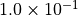
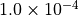
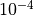

flopy.mf6.modflow.mfims Module¶
-
class
flopy.mf6.modflow.mfims.ModflowIms(simulation, add_to_package_list=True, print_option=None, complexity=None, csv_output_filerecord=None, outer_hclose=None, outer_maximum=None, under_relaxation=None, under_relaxation_theta=None, under_relaxation_kappa=None, under_relaxation_gamma=None, under_relaxation_momentum=None, backtracking_number=None, backtracking_tolerance=None, backtracking_reduction_factor=None, backtracking_residual_limit=None, inner_maximum=None, inner_hclose=None, rcloserecord=None, linear_acceleration=None, relaxation_factor=None, preconditioner_levels=None, preconditioner_drop_tolerance=None, number_orthogonalizations=None, scaling_method=None, reordering_method=None, fname=None, pname=None, parent_file=None)¶ ModflowIms defines a ims package.
Parameters: simulation : MFSimulation
Simulation that this package is a part of. Package is automatically added to simulation when it is initialized.
add_to_package_list : bool
Do not set this parameter. It is intended for debugging and internal processing purposes only.
print_option : string
- print_option (string) is a flag that controls printing of convergence information from the solver. NONE means print nothing. SUMMARY means print only the total number of iterations and nonlinear residual reduction summaries. ALL means print linear matrix solver convergence information to the solution listing file and model specific linear matrix solver convergence information to each model listing file in addition to SUMMARY information. NONE is default if PRINT_OPTION is not specified.
complexity : string
- complexity (string) is an optional keyword that defines default non- linear and linear solver parameters. SIMPLE - indicates that default solver input values will be defined that work well for nearly linear models. This would be used for models that do not include nonlinear stress packages and models that are either confined or consist of a single unconfined layer that is thick enough to contain the water table within a single layer. MODERATE - indicates that default solver input values will be defined that work well for moderately nonlinear models. This would be used for models that include nonlinear stress packages and models that consist of one or more unconfined layers. The MODERATE option should be used when the SIMPLE option does not result in successful convergence. COMPLEX - indicates that default solver input values will be defined that work well for highly nonlinear models. This would be used for models that include nonlinear stress packages and models that consist of one or more unconfined layers representing complex geology and surface- water/groundwater interaction. The COMPLEX option should be used when the MODERATE option does not result in successful convergence. Non- linear and linear solver parameters assigned using a specified complexity can be modified in the NONLINEAR and LINEAR blocks. If the COMPLEXITY option is not specified, NONLINEAR and LINEAR variables will be assigned the simple complexity values.
csv_output_filerecord : [csvfile]
- csvfile (string) name of the ascii comma separated values output file to write solver convergence information. If PRINT_OPTION is NONE or SUMMARY, comma separated values output includes maximum head change convergence information at the end of each outer iteration for each time step. If PRINT_OPTION is ALL, comma separated values output includes maximum head change and maximum residual convergence information for the solution and each model (if the solution includes more than one model) and linear acceleration information for each inner iteration.
outer_hclose : double
- outer_hclose (double) real value defining the head change criterion for convergence of the outer (nonlinear) iterations, in units of length. When the maximum absolute value of the head change at all nodes during an iteration is less than or equal to OUTER_HCLOSE, iteration stops. Commonly, OUTER_HCLOSE equals 0.01.
outer_maximum : integer
- outer_maximum (integer) integer value defining the maximum number of outer (nonlinear) iterations – that is, calls to the solution routine. For a linear problem OUTER_MAXIMUM should be 1.
under_relaxation : string
- under_relaxation (string) is an optional keyword that defines the nonlinear under-relaxation schemes used. By default under-relaxation is not used. NONE - under-relaxation is not used. SIMPLE - Simple under-relaxation scheme with a fixed relaxation factor is used. COOLEY - Cooley under-relaxation scheme is used. DBD - delta-bar- delta under-relaxation is used. Note that the under-relaxation schemes are used in conjunction with problems that use the Newton- Raphson formulation, however, experience has indicated that the Cooley under-relaxation and damping work well also for the Picard scheme with the wet/dry options of MODFLOW 6.
under_relaxation_theta : double
- under_relaxation_theta (double) real value defining the reduction factor for the learning rate (under-relaxation term) of the delta- bar-delta algorithm. The value of UNDER_RELAXATION_THETA is between zero and one. If the change in the variable (head) is of opposite sign to that of the previous iteration, the under-relaxation term is reduced by a factor of UNDER_RELAXATION_THETA. The value usually ranges from 0.3 to 0.9; a value of 0.7 works well for most problems. UNDER_RELAXATION_THETA only needs to be specified if UNDER_RELAXATION is DBD.
under_relaxation_kappa : double
- under_relaxation_kappa (double) real value defining the increment for the learning rate (under-relaxation term) of the delta-bar-delta algorithm. The value of UNDER_RELAXATION_kappa is between zero and one. If the change in the variable (head) is of the same sign to that of the previous iteration, the under-relaxation term is increased by an increment of UNDER_RELAXATION_KAPPA. The value usually ranges from 0.03 to 0.3; a value of 0.1 works well for most problems. UNDER_RELAXATION_KAPPA only needs to be specified if UNDER_RELAXATION is DBD.
under_relaxation_gamma : double
- under_relaxation_gamma (double) real value defining the history or memory term factor of the delta-bar-delta algorithm. UNDER_RELAXATION_GAMMA is between zero and 1 but cannot be equal to one. When UNDER_RELAXATION_GAMMA is zero, only the most recent history (previous iteration value) is maintained. As UNDER_RELAXATION_GAMMA is increased, past history of iteration changes has greater influence on the memory term. The memory term is maintained as an exponential average of past changes. Retaining some past history can overcome granular behavior in the calculated function surface and therefore helps to overcome cyclic patterns of non-convergence. The value usually ranges from 0.1 to 0.3; a value of 0.2 works well for most problems. UNDER_RELAXATION_GAMMA only needs to be specified if UNDER_RELAXATION is not NONE.
under_relaxation_momentum : double
- under_relaxation_momentum (double) real value defining the fraction of past history changes that is added as a momentum term to the step change for a nonlinear iteration. The value of UNDER_RELAXATION_MOMENTUM is between zero and one. A large momentum term should only be used when small learning rates are expected. Small amounts of the momentum term help convergence. The value usually ranges from 0.0001 to 0.1; a value of 0.001 works well for most problems. UNDER_RELAXATION_MOMENTUM only needs to be specified if UNDER_RELAXATION is DBD.
backtracking_number : integer
- backtracking_number (integer) integer value defining the maximum number of backtracking iterations allowed for residual reduction computations. If BACKTRACKING_NUMBER = 0 then the backtracking iterations are omitted. The value usually ranges from 2 to 20; a value of 10 works well for most problems.
backtracking_tolerance : double
- backtracking_tolerance (double) real value defining the tolerance for residual change that is allowed for residual reduction computations. BACKTRACKING_TOLERANCE should not be less than one to avoid getting stuck in local minima. A large value serves to check for extreme residual increases, while a low value serves to control step size more severely. The value usually ranges from 1.0 to 10:math:^6; a value of 10:math:^4 works well for most problems but lower values like 1.1 may be required for harder problems. BACKTRACKING_TOLERANCE only needs to be specified if BACKTRACKING_NUMBER is greater than zero.
backtracking_reduction_factor : double
- backtracking_reduction_factor (double) real value defining the reduction in step size used for residual reduction computations. The value of BACKTRACKING_REDUCTION_FACTOR is between zero and one. The value usually ranges from 0.1 to 0.3; a value of 0.2 works well for most problems. BACKTRACKING_REDUCTION_FACTOR only needs to be specified if BACKTRACKING_NUMBER is greater than zero.
backtracking_residual_limit : double
- backtracking_residual_limit (double) real value defining the limit to which the residual is reduced with backtracking. If the residual is smaller than BACKTRACKING_RESIDUAL_LIMIT, then further backtracking is not performed. A value of 100 is suitable for large problems and residual reduction to smaller values may only slow down computations. BACKTRACKING_RESIDUAL_LIMIT only needs to be specified if BACKTRACKING_NUMBER is greater than zero.
inner_maximum : integer
- inner_maximum (integer) integer value defining the maximum number of inner (linear) iterations. The number typically depends on the characteristics of the matrix solution scheme being used. For nonlinear problems, INNER_MAXIMUM usually ranges from 60 to 600; a value of 100 will be sufficient for most linear problems.
inner_hclose : double
- inner_hclose (double) real value defining the head change criterion for convergence of the inner (linear) iterations, in units of length. When the maximum absolute value of the head change at all nodes during an iteration is less than or equal to INNER_HCLOSE, the matrix solver assumes convergence. Commonly, INNER_HCLOSE is set an order of magnitude less than the OUTER_HCLOSE value specified for the NONLINEAR block.
rcloserecord : [inner_rclose, rclose_option]
- inner_rclose (double) real value that defines the flow residual tolerance for convergence of the IMS linear solver and specific flow residual criteria used. This value represents the maximum allowable residual at any single node. Value is in units of length cubed per time, and must be consistent with mf length and time units. Usually a value of  is sufficient for the flow- residual criteria when meters and seconds are the defined mf length and time.
- rclose_option (string) an optional keyword that defines the specific
flow residual criterion used. STRICT–an optional keyword that is
used to specify that INNER_RCLOSE represents a infinity-Norm
(absolute convergence criteria) and that the head and flow
convergence criteria must be met on the first inner iteration (this
criteria is equivalent to the criteria used by the MODFLOW-2005 PCG
package~citep{hill1990preconditioned}). L2NORM_RCLOSE–an optional
keyword that is used to specify that INNER_RCLOSE represents a L-2
Norm closure criteria instead of a infinity-Norm (absolute
convergence criteria). When L2NORM_RCLOSE is specified, a reasonable
initial INNER_RCLOSE value is 0.1 times the number of active cells
when meters and seconds are the defined mf length and time.
RELATIVE_RCLOSE–an optional keyword that is used to specify that
INNER_RCLOSE represents a relative L-2 Norm reduction closure
criteria instead of a infinity-Norm (absolute convergence criteria).
When RELATIVE_RCLOSE is specified, a reasonable initial INNER_RCLOSE
value is  and convergence is achieved for
a given inner (linear) iteration when
INNER_HCLOSE and the current L-2 Norm is
 the product of
the RELATIVE_RCLOSE and the initial L-2 Norm for the current inner
(linear) iteration. If RCLOSE_OPTION is not specified, an absolute
residual (infinity-norm) criterion is used.
the product of
the RELATIVE_RCLOSE and the initial L-2 Norm for the current inner
(linear) iteration. If RCLOSE_OPTION is not specified, an absolute
residual (infinity-norm) criterion is used.
linear_acceleration : string
- linear_acceleration (string) a keyword that defines the linear acceleration method used by the default IMS linear solvers. CG - preconditioned conjugate gradient method. BICGSTAB - preconditioned bi-conjugate gradient stabilized method.
relaxation_factor : double
- relaxation_factor (double) optional real value that defines the relaxation factor used by the incomplete LU factorization preconditioners (MILU(0) and MILUT). RELAXATION_FACTOR is unitless and should be greater than or equal to 0.0 and less than or equal to 1.0. RELAXATION_FACTOR values of about 1.0 are commonly used, and experience suggests that convergence can be optimized in some cases with relax values of 0.97. A RELAXATION_FACTOR value of 0.0 will result in either ILU(0) or ILUT preconditioning (depending on the value specified for PRECONDITIONER_LEVELS and/or PRECONDITIONER_DROP_TOLERANCE). By default, RELAXATION_FACTOR is zero.
preconditioner_levels : integer
- preconditioner_levels (integer) optional integer value defining the level of fill for ILU decomposition used in the ILUT and MILUT preconditioners. Higher levels of fill provide more robustness but also require more memory. For optimal performance, it is suggested that a large level of fill be applied (7 or 8) with use of a drop tolerance. Specification of a PRECONDITIONER_LEVELS value greater than zero results in use of the ILUT preconditioner. By default, PRECONDITIONER_LEVELS is zero and the zero-fill incomplete LU factorization preconditioners (ILU(0) and MILU(0)) are used.
preconditioner_drop_tolerance : double
- preconditioner_drop_tolerance (double) optional real value that defines the drop tolerance used to drop preconditioner terms based on the magnitude of matrix entries in the ILUT and MILUT preconditioners. A value of  works well for most problems. By default, PRECONDITIONER_DROP_TOLERANCE is zero and the zero-fill incomplete LU factorization preconditioners (ILU(0) and MILU(0)) are used.
number_orthogonalizations : integer
- number_orthogonalizations (integer) optional integer value defining the interval used to explicitly recalculate the residual of the flow equation using the solver coefficient matrix, the latest head estimates, and the right hand side. For problems that benefit from explicit recalculation of the residual, a number between 4 and 10 is appropriate. By default, NUMBER_ORTHOGONALIZATIONS is zero.
scaling_method : string
- scaling_method (string) an optional keyword that defines the matrix scaling approach used. By default, matrix scaling is not applied. NONE - no matrix scaling applied. DIAGONAL - symmetric matrix scaling using the POLCG preconditioner scaling method in Hill (1992). L2NORM - symmetric matrix scaling using the L2 norm.
reordering_method : string
- reordering_method (string) an optional keyword that defines the matrix reordering approach used. By default, matrix reordering is not applied. NONE - original ordering. RCM - reverse Cuthill McKee ordering. MD - minimum degree ordering.
fname : String
File name for this package.
pname : String
Package name for this package.
parent_file : MFPackage
Parent package file that references this package. Only needed for utility packages (mfutl*). For example, mfutllaktab package must have a mfgwflak package parent_file.
-
get_package(name=None)¶ Get a package.
Parameters: name : str
Name of the package, ‘RIV’, ‘LPF’, etc.
Returns: pp : Package object